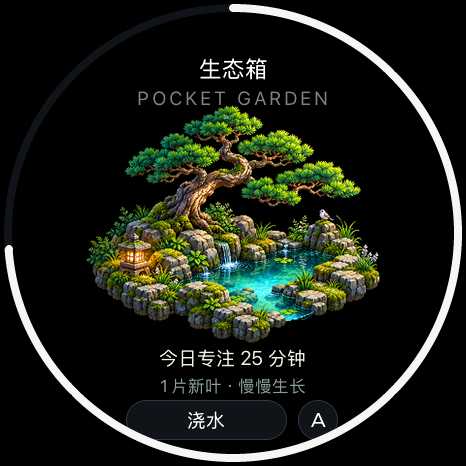
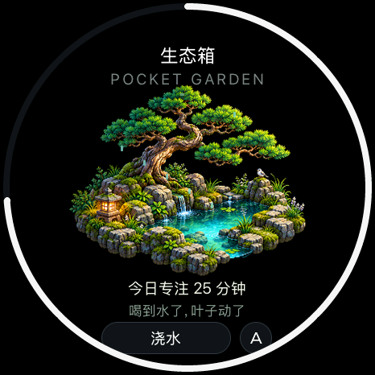
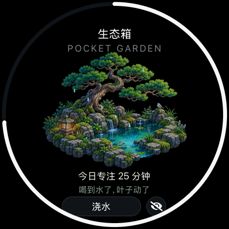

<!doctype html><html lang="zh-CN"><meta charset="utf-8"><meta name="viewport" content="width=1080"><title>掌心生态箱</title><link rel="stylesheet" href="style.css">
    <main class="poster hero-page" data-number="11"><header><div class="brand">soRound OS <span>明天 · 正式版见</span></div><div class="kicker">10 / 新应用 · 生态箱</div><h1>在掌心，<br>养一片小风景。</h1><p class="sub">浇一点水，看昼夜变化；每次专注结束，多一片新叶。</p></header><div class="content"><div class="hero"><figure class=""><figcaption></figcaption></figure></div><div class="mini-row"><figure class=""><figcaption>日间</figcaption></figure><figure class=""><figcaption>浇水</figcaption></figure><figure class=""><figcaption>夜间</figcaption></figure></div></div><footer><span>原生 UI 渲染 · 画面数值为示例</span><span>11 / 10.23</span></footer></main></html>